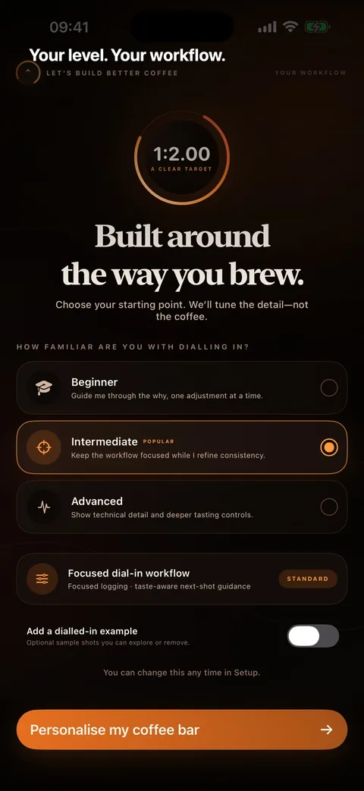
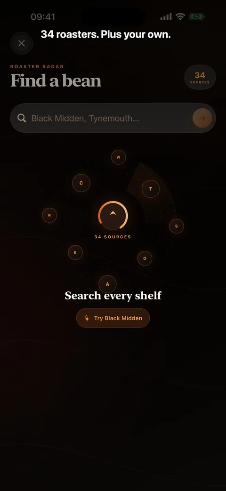

Beginner, Intermediate and Advanced presentation changes the language and depth. Standard or Advanced logging controls the data you see.
Available on the App Store
A precision tool for home baristasBetter coffee.
One shot at a time.
Choose your experience level, prepare the full setup, pull by weight or time and keep the result—then use successful same-bean history to make one clear adjustment.
Essentials stay freeOptional Better Coffee ProNo account


Inside Better Coffee
From first setup to the next better shot.
Choose the right level of guidance, follow the shot workflow, understand the next adjustment and spot useful patterns across your coffee history.
Focused, not fussy
The useful details, ready when you need them.
Use successful shots with the same bean to choose one controlled adjustment—not a promise of laboratory precision.
Scan a barcode or recognise label text on-device for free. Pro adds online discovery across 34 roaster sources and compatible custom stores you add.
Pro tests one-variable changes against recorded taste, keeps a transparent experiment ledger and never invents causality.
Pro forecasts shots left, likely finish date, cost per shot and when single-dose freezing may protect the bag.
Pro turns the shots you actually logged into filterable extraction and taste patterns, then keeps successful recipes ready to repeat.
Free essentials. Optional Pro.
Start with everything needed to log and learn.
Manual logging, manual beans, every experience level, basic coaching and full backup stay free. Pro is available monthly, annually or with one lifetime purchase. UK prices are £2.99 monthly, £19.99 annually or £39.99 lifetime; Apple shows the exact local price and terms before purchase.
Privacy and purchase at a glance
- Free manual logging and bean management
- Optional monthly, annual or lifetime Pro
- Purchases and restores handled by Apple
- No account, advertising or analytics SDK
- Local file-backed records
- User-controlled Files backup
Make the next shot an informed one.
Let’s Build Better Coffee is available now for iPhone.